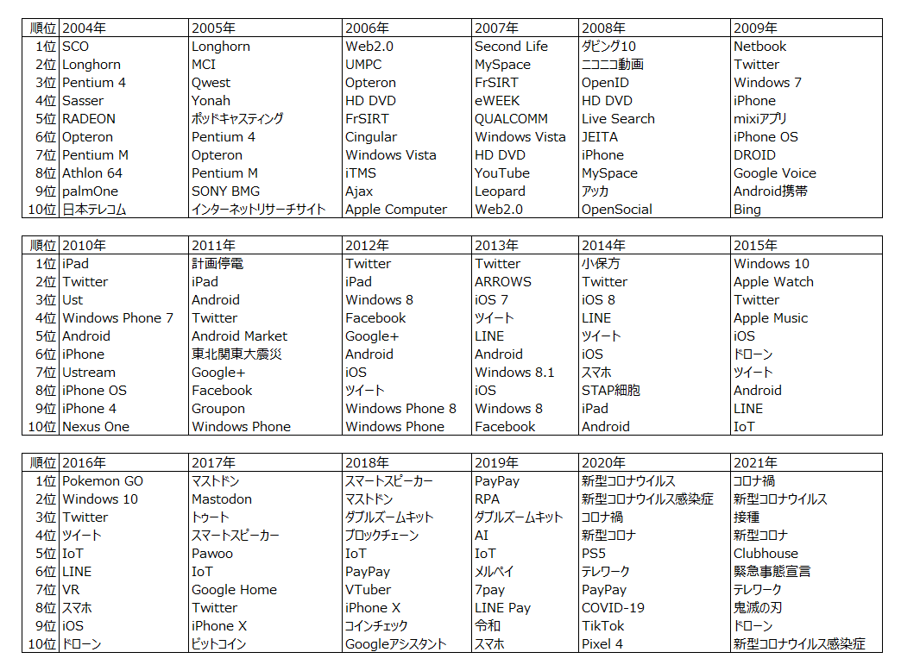

ITmedia NEWSの記事データについて、TF-IDFを用いて毎年の「その年のIT分野の世相を表す単語」をピックアップしました。
まずは記事のテキストデータを入手する必要があります。
過去記事一覧からスクレイピングで辿ることで、2004年1月以降の全ての記事を取得しました1。サーバに負荷がかからないよう、十分なスリープを挟みました。
2004/1/7～2021/7/31において88638本の記事がありました。そのうち実際に取得できた記事は88249本でした。
記事の日時、タイトル、本文、URLを取得しました。以降、このテキストデータを用いて分析を行います。
## # A tibble: 88,249 x 4
## datetime title content url
## <dttm> <chr> <chr> <chr>
## 1 2004-01-07 13:15:00 “最薄”と“連~ 薄型ボディに回転式レン~ https://www.itm~
## 2 2004-01-07 15:02:00 世界初のSerial ~ 富士通は1月5日、Serial~ https://www.itm~
## 3 2004-01-07 15:06:00 コニカミノルタ~ コニカミノルタビジネス~ https://www.itm~
## 4 2004-01-07 15:09:00 Baniasコアの「C~ インテルは1月6日、ノー~ https://www.itm~
## 5 2004-01-07 15:10:00 「モバイルAthlo~ 日本AMDは1月6日、64ビ~ https://www.itm~
## 6 2004-01-07 15:16:00 ラジオたんぱ、P~ 日経ラジオ社（ラジオた~ https://www.itm~
## 7 2004-01-07 15:22:00 年始、ロボット~ 昨年のクリスマスを一人~ https://www.itm~
## 8 2004-01-07 18:36:00 2004年の自作PC~ 各ショップで口をそろえ~ https://www.itm~
## 9 2004-01-08 08:52:00 ATI、3D対応の携~ グラフィックスチップメ~ https://www.itm~
## 10 2004-01-08 10:56:00 Segwayに新社長 ハイテクスクーターの提~ https://www.itm~
## # ... with 88,239 more rows本分析で求めたいのは、「他の年の記事にはあまり出てこないが、ある年の記事によく出てきた単語」です。本分析では、この度合いを示す指標としてTF-IDFを用います。
ある文書にはあまり出現しないが他のある文書にはよく出現する単語は大きな値を取る性質があり、特徴語の特徴量としてよく用いられます。
文書\(j\)における単語\(i\)のTF-IDFは、TF（Term Frequency、単語の出現頻度）とIDF（Inverse Document Frequency、逆文書頻度）の積で表され、下記の通り求められます。
\[ \begin{align} tfidf_{i,j} &= tf_{i,j} \cdot idf_{i} \\ tf_{i,j} &= \frac{文書jにおける単語iの出現回数} {文書jにおける全ての単語の出現回数の和} \\ idf_{i} &= \log \frac{総文書数}{単語iが出現する文書数} \end{align} \]
本分析では、文書カテゴリ（上での\(j\)）は投稿日の年数（2004年～2021年）です。すなわち、2004年に投稿されたニュース群、2005年に投稿されたニュース群、…、2021年に投稿されたニュース群というように、18個の文書カテゴリがあります。
なお、TFとIDFの定義は、上記以外に色々あります。（例えばいろんなtf-idf）今回は他にも、TFの2値化や、IDFを単語iが出現する文書数+1の自然対数としたバージョンも試してみましたが、結果がよくなかったため割愛します。2
Rでは、tidytext::bind_tf_idfを用いてTF-IDFが求められます。ただ、実装は特に難しくありませんので、自分の理解を兼ねてtidyverseでの集計によって一から実装しました。なお、tidytext::bind_tf_idfは上記の数式の通りの最もオーソドックスなTF-IDFの算出法しか実装されていませんので、他の方法でのTF-IDFを求めたい場合は一から実装する必要があります。
実装は下記の通りになります。
library(tidyverse)
library(lubridate)
# remotes::install_github("suzuna/mecabtools")
library(mecabtools)
# CRAN版ではなくGitHubにある開発版を入れる（2022/1/30時点では、zipangu::str_jnormalizeがCRAN版（v0.2.3）にはないため）
# remotes::install_github("uribo/zipangu")
library(zipangu)
library(here)
library(furrr)
# 事前に集めたデータを読み込む -------------------------------------------------------------------
article <- read_csv(here("data/ITmedia_news_article_0401_2107.csv"),locale=locale(tz="Asia/Tokyo")) %>%
arrange(datetime)
# 前処理する -------------------------------------------------------------------
df <- article %>%
mutate(content=str_remove_all(content,"<p>")) %>%
# かっこ内の単語を削除（かっこ内の単語は前の単語の略語のことが多いため、同じ意味を持つ略す前の単語と略語が重複するから）
mutate(content=str_remove_all(content,"（[^）]*）")) %>%
# 記事中の年月日は削除
mutate(content=str_remove_all(content,"[0-9]+(年|年度|月|日)")) %>%
mutate(content=zipangu::str_jnormalize(content)) %>%
# このyearが、文書カテゴリ
mutate(year=lubridate::year(datetime),id=str_extract(url,"[0-9]{4}/[0-9]{2}/news[0-9]+")) %>%
select(id,year,title,content,url)
# 形態素解析 -------------------------------------------------------------------
plan(multisession)
tictoc::tic()
keitaiso <- df %>%
mutate(content=iconv(content,"UTF-8","Shift-JIS")) %>%
mutate(tmp=future_map(content,~mecabtools::pos_full(.x,NULL),.progress=T)) %>%
unnest(tmp)
tictoc::toc()
plan(sequential)
# TF-IDFを算出する ---------------------------------------------------------------
words <- keitaiso %>%
filter(pos=="名詞") %>%
filter(pos1!="数") %>%
select(id,year,surface)
df_n <- words %>%
count(year,surface,name="n")
unique_article_n <- words %>%
group_by(surface) %>%
summarize(n_article=length(unique(id)))
# 出現回数が全ての記事で30回未満の単語を除外する
used_words <- unique_article_n %>%
filter(n_article>=30) %>%
pull(surface)
# 文書カテゴリの数（2004～2021年の18個）
n_doc_all <- df_n %>%
pull(year) %>%
unique() %>%
length()
tf_idf <- df_n %>%
filter(surface %in% used_words) %>%
mutate(tf=n/sum(n)) %>%
add_count(surface,name="n_doc") %>%
mutate(idf=log(n_doc_all/n_doc)) %>%
mutate(tf_idf=tf*idf)
# TF-IDF上位の単語を取り出す --------------------------------------------------------
res <- tf_idf %>%
arrange(year,desc(tf_idf)) %>%
group_by(year) %>%
mutate(rank=row_number(desc(tf_idf))) %>%
ungroup() %>%
filter(rank<=100)
# 見た目を整えたテーブル
res_table <- res %>%
select(year,surface,rank) %>%
filter(rank<=20) %>%
pivot_wider(names_from=year,values_from=surface,names_glue="{.name}年") %>%
mutate(rank=str_c(rank,"位"))こちらです。各年の時勢をうまく表していますね！
